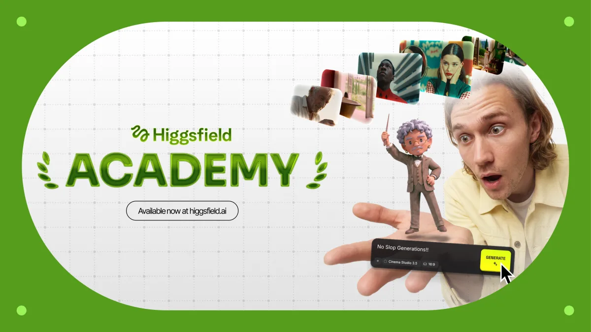

Threads｜Higgsfield Academy：7 堂、90 分鐘的 AI 影片入門課，免費入口不等於生成零成本

一句話摘要
Higgsfield Academy 是 Higgsfield 官方設計給零基礎使用者的 AI 影片入門路徑：先學會描述畫面、選模型與設定，再用短場景、運鏡與版本迭代做出第一支影片；它值得當作操作導覽，但應把「免費開始」和「平台生成成本」分開評估。
Threads 貼文重點
Fan Leung（@fan__leung）分享 Higgsfield 新推出 Academy，稱其為 AI 影視製作 101：**7 節課、90 分鐘**，由生成平台官方帶著新手做影片；貼文同時提醒 Higgsfield 品質高、費用也可能偏高。
官方 Academy 頁確實以「7 lessons. 90 minutes. You’ll make your first video in the first lesson.」呈現課程。不過，貼文的費用評價沒有附當下方案或 credits 明細，以下將其視為採用前的成本提醒，而不是可量化的價格結論。
官方頁面確認的課程內容
Higgsfield Academy 公開頁把目標寫得很清楚：從零開始製作第一張 AI 圖像與第一支 AI 影片，並聲稱不需要先備經驗。可確認的學習項目包括：
- **Prompt 基礎**：知道要輸入什麼，讓同一個 prompt box 產生更可控的結果。
- **參考素材與迭代**：學習使用 reference，並調整 prompt 改善下一個 take。
- **影片語言**：練習短場景、鏡頭選擇、角度與運鏡。
- **模型與設定選擇**：課程表示會提示每堂課適合的模型與設定，讓初學者先專注創作。
- **學習配套**：官方頁列出 7 個 video lessons、每課 PDF guide、作業，以及完成證書。
這種設計對剛接觸 AI 影片的人很實用：它不是先丟大量模型名詞，而是先讓使用者建立「畫面描述 → 生成 → 比對 → 修改」的基本迴圈。
「Start for free」應怎麼看
Academy 頁面多處提供 **Start for free**，並寫著「Everything you need is inside. Nothing to buy.」。但公開頁沒有把以下事項完整展開：
- 看課、下載教材、交作業與取得證書的登入／資格條件；
- 練習時每次生成要用哪個模型、消耗多少 credits；
- 免費額度是否有期間、地區、模型或帳號限制；
- 超出入門練習後的訂閱與按量用費。
所以比較穩妥的解讀是：**它提供免費起步的學習入口，不構成整個生成平台永久、無限、零成本的承諾。** 建議實際登入後先確認帳戶 dashboard、課程的指定模型和每個練習的 credits 提示，再決定是否投入大量嘗試。
為什麼值得學，即使不用 Higgsfield 當主力工具
這套課程教的許多原則具有可遷移性：
- 將「想要一支好影片」拆成主體、場景、動作、鏡頭、光線與節奏；
- 用 reference 限縮風格與角色漂移；
- 對同一想法做 take A／B 比較，而不是只生成一次就判斷模型好壞；
- 分辨 prompt 問題、模型選擇問題與素材／剪輯問題。
即使最後改用其他圖像或影片生成平台，這些練習依然有價值。反過來說，平台教學也可能偏向自家模型與產品介面，學完仍應用同一份 prompt 在至少一個替代工具做小型對照。
最小成本的練習法
- 先完成第一堂，不急著做商案：用無人物肖像、無保密資訊的 5–10 秒概念場景。
- 每次只改一件事：例如先改鏡頭角度，再改動作，避免不知道是哪個詞造成差異。
- 截圖或記錄 prompt、模型、設定與輸出，建立自己的「有效句型」筆記。
- 在課程指定的生成前，先看清楚每次執行的 credits／帳戶提示；若需要付費，再由自己決定是否繼續。
- 若要商用，另行確認角色肖像、上傳素材、音樂、輸出授權與平台條款；課程完成證書不等於商業授權。
來源
- Threads：<https://www.threads.com/@fan__leung/post/DetrU5qE1Lf>
- Higgsfield Academy（官方）：<https://higgsfield.ai/academy>